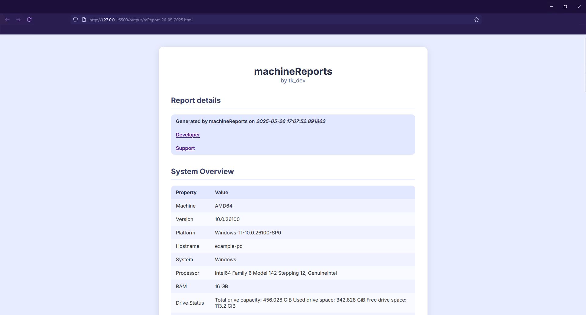

machineReports

machineReports enables you to easily create detailed system reports containing:
- Hardware information
- IP/MAC addresses, online check
- Firewall information and rules
- User information
- Shell information
- Environment variables
- Config files
- USB-Devices
- Installed software
- Node/npm version
- Python version and path
- Installed package managers
- Installed pip packages
- Git config
Just run the script on the target machine and the script will create reports either as HTML or as plain text.
This can be useful if you want to document your development environment.
Download
Home